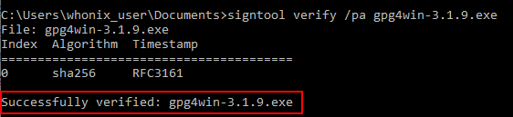

We believe security software like Kicksecure needs to remain Open Source and independent. Would you help sustain and grow the project? Learn more about our 14 year success story and maybe DONATE!
Verify the images using LinuxDocumentationVerify the images using macOSPrevious page: Verify the images using LinuxIndex page: DocumentationNext page: Verify the images using macOSVerify Kicksecure Virtual Machine Images in Windows
Instructions for OpenPGP Verification of Kicksecure Images using Windows
Introduction

- Digital signatures are a tool enhancing download security. They are commonly used across the internet and nothing special to worry about.
- Optional, not required: Digital signatures are optional and not mandatory for using Kicksecure, but an extra security measure for advanced users. If you've never used them before, it might be overwhelming to look into them at this stage. Just ignore them for now.
- Learn more: Curious? If you are interested in becoming more familiar with advanced computer security concepts, you can learn more about digital signatures here: Verifying Software Signatures
GnuPG is a complete and free
implementation of OpenPGP that
allows users to encrypt and sign data and communications. Gpg4win is a graphical front end for
GnuPG that is used for file and email encryption in Windows. The
verification process for the Kicksecure images begins with securely
downloading and verifying the gpg4win package. Once
completed GPG can be used from the command-line to verify the Kicksecure
images.
The following guide provides steps to:
- Install SignTool.
- Download and verify GPG4win.
- Download the Kicksecure signing key.
- Verify the Kicksecure images.
Verify Kicksecure Images in Windows using Gpg4win
Download and Verify Gpg4win
1. Prerequisite: SignTool
Before proceeding, ensure you have SignTool installed.
It's used to verify the authenticity of the gpg4win
package. For installation instructions, refer to Authenticode -
Windows Digital Software Signatures chapter Install SignTool.
2. Download the gpg4win
Package:
- Visit https://files.gpg4win.org.
- Find and download the most recent version of
gpg4winand its corresponding signature. (As of August 2020, the latest version wasgpg4win-3.1.12.exe). - Tip: To simplify the SignTool verification,
download the
gpg4winpackage directly to the Downloads directory.
3. Verify the Package using SignTool:
Open the command prompt from the Windows Start Menu:
cmd.exe
Change to the Downloads directory:
cd C:\Users\<your_user_name>\Downloads
Run SignTool to verify the gpg4win package:
signtool verify /pa gpg4win-3-1.12.exe
Upon successful verification, the following output will appear:
Figure: Successful Verification

 Warning: Should the verification fail, delete the
downloaded
Warning: Should the verification fail, delete the
downloaded gpg4win package. Afterwards, re-download and
verify again.
4. Completion:
You've successfully verified the Gpg4win package.
Download the Kicksecure Signing Key
 This entry is strongly related to the Placing Trust in Kicksecure page.
This entry is strongly related to the Placing Trust in Kicksecure page.
 This entry is for Download the Kicksecure Signing Key on the Windows
platform. Includes Windows specifics such as file paths. This chapter
might be out of date. In case of questions, see the Kicksecure Signing Key page
first which takes presedence.
This entry is for Download the Kicksecure Signing Key on the Windows
platform. Includes Windows specifics such as file paths. This chapter
might be out of date. In case of questions, see the Kicksecure Signing Key page
first which takes presedence.
Since all Kicksecure releases are signed with the same key, it is unnecessary to verify the key every time a new release is announced. Trust in the key might gradually increase over time, but cryptographic signatures must still be verified every time a new release is downloaded.
Note: With the exception of step 1 all commands should be run
from C:\Users\<user_name\Downloads
1. If not already completed, have GnuPG initialize your user data folder.
gpg --fingerprint
2. Download Patrick Schleizer's (adrelanos') OpenPGP key. [1]
Store the key as
C:\Users\\Downloads\derivative.asc
3. Change to the
C:\Users\\Downloads\ directory.
cd C:\Users\<user_name>\Downloads\
4. Check fingerprints/owners without importing anything.
gpg --keyid-format long --with-fingerprint derivative.asc
5. Verify the output.
The most important check is confirming the key fingerprint exactly matches the output below. [2]
Key fingerprint = 916B 8D99 C38E AF5E 8ADC 7A2A 8D66 066A 2EEA CCDAThe message
gpg: key 8D66066A2EEACCDA: 104 signatures not checked due to missing keys
is related to the The OpenPGP Web of Trust. Advanced users can learn
more about this here.
6. Import the key.
gpg --import derivative.asc
The output should include the key was imported.
gpg: Total number processed: 1
gpg: imported: 1If the Kicksecure signing key was already imported in the past, the output should include the key is unchanged.
gpg: Total number processed: 1
gpg: unchanged: 1If the following message appears at the end of the output.
gpg: no ultimately trusted keys foundThis extra message does not relate to the Kicksecure signing key itself, but instead usually means the user has not created an OpenPGP key yet, which is of no importance when verifying virtual machine images.
Analyze the other messages as usual.
Verify the Kicksecure Images
1. If not already completed, download the
Kicksecure iso (or ova for VirtualBox) image
and the corresponding OpenGPG signature which will be used to verify the
image.
Either, download the
- A) ISO image and signature from ISO download page. Or,
- B) VirtualBox VM image and signature from VirtualBox download page.
Both,
- 1) image, and
- 2) signature
should be downloaded into the same directory.
2. Start the cryptographic verification; this process can take several minutes.
At the Windows command prompt, change to the directory with the
Kicksecure iso (or ova) and corresponding
signature file.
cd C:\Users\<user_name>\<directory_name>
3. Verify the Kicksecure iso (or
ova) image.
- iso: gpg --verify-options show-notations --verify Kicksecure*.*.asc Kicksecure*.iso
- ova: gpg --verify-options show-notations --verify Kicksecure*.*.asc Kicksecure*.ova
If the Virtual Machine image is correct the output will tell you that the signature is good.
gpg: Signature made Mon 19 Jan 2015 11:45:41 PM CET using RSA key ID 77BB3C48 gpg: Good signature from "Patrick Schleizer <adrelanos@whonix.org>" [unknown] gpg: Signature notation: issuer-fpr@notations.openpgp.fifthhorseman.net=6E979B28A6F37C43BE30AFA1CB8D50BB77BB3C48 gpg: Signature notation: file@name=Kicksecure-18.2.1.9.ova gpg: WARNING: This key is not certified with a trusted signature! gpg: There is no indication that the signature belongs to the owner. Primary key fingerprint: 916B 8D99 C38E AF5E 8ADC 7A2A 8D66 066A 2EEA CCDA
Subkey fingerprint: 6E97 9B28 A6F3 7C43 BE30 AFA1 CB8D 50BB 77BB 3C48
This might be followed by a warning saying:
gpg: WARNING: This key is not certified with a trusted signature!
gpg: There is no indication that the signature belongs to the owner.This message does not alter the validity of the signature related to the downloaded key. Rather, this warning refers to the level of trust placed in the Kicksecure signing key and the web of trust. To remove this warning, the Kicksecure signing key must be personally signed with your own key.
 Remember to check the GPG signature timestamp. For instance, if you
previously saw a signature from 2023 and now see one from 2022, this
could indicate a potential rollback (downgrade) or indefinite freeze
attack.[3]
Remember to check the GPG signature timestamp. For instance, if you
previously saw a signature from 2023 and now see one from 2022, this
could indicate a potential rollback (downgrade) or indefinite freeze
attack.[3]
The first line includes the signature creation timestamp. Example.
gpg: Signature made Mon 19 Jan 2015 11:45:41 PM CET using RSA key ID 77BB3C48 Remember: OpenPGP signatures sign the contents of files, not
the file names themselves. [4]
Remember: OpenPGP signatures sign the contents of files, not
the file names themselves. [4]
To help users confirm that the file name has not been tampered with, beginning with Kicksecure version 9.6 and above the file@name OpenPGP notation includes the file name.
 Do not continue if verification fails! This risks using infected or
erroneous files! The whole point of verification is to confirm file
integrity. This page is strongly related to the pages Placing Trust in Kicksecure and Verifying Software
Signatures.
Do not continue if verification fails! This risks using infected or
erroneous files! The whole point of verification is to confirm file
integrity. This page is strongly related to the pages Placing Trust in Kicksecure and Verifying Software
Signatures.
4. When Kicksecure verification is complete, continue with the VirtualBox installation.
Troubleshooting
Encountering GPG Errors
When a GPG error is encountered, first try a web search for the relevant error. The security stackexchange website can also help to resolve GPG problems. Describe the problem thoroughly, but be sure it is GPG-related and not specific to Kicksecure.
More help resources are available on the Support page.
Footnotes
- curl --tlsv1.3 --proto =https --max-time 180 --output derivative.asc https://www.whonix.org/derivative.asc
- Minor changes in the output such as new uids (email addresses) or newer expiration dates are inconsequential.
- As defined by TUF: Attacks and Weaknesses: * https://theupdateframework.io/security/
- https://lists.gnupg.org/pipermail/gnupg-users/2015-January/052185.html
Categories: Documentation